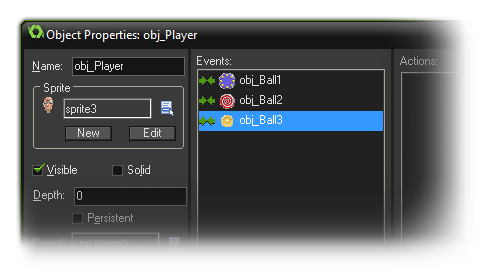
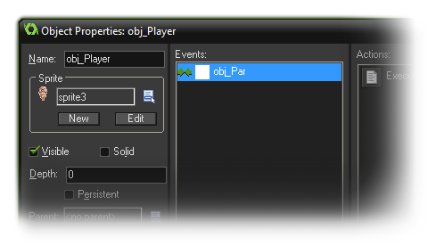

One of the most powerful options within the object properties is
the ability to assign a parent. Every object in the game can have a
parent object, but what does this mean? Well, when an object has a
parent, it can share code, actions and events with that parent.
This is called "inheritance" and an object that has a parent is
called a "child". But that's not all! You can also do checks and
run code on parent objects which automatically include the child
objects too which saves a lot of time and energy. Another way to
look at a parent object is as a way to "group" objects together
under the same umbrella and have them share certain things without
loosing their own identity. Now, this may seem a bit complicated to
understand so let's give some examples:
Say you have a player object and four different enemy objects. Now,
you want the player to die if he touches any of these four objects
and this would normally entail four collision events with four sets
of actions or code, one for each of the enemy objects. BUT if we
make a parent object for all the enemies, then we can create
one collision event with the parent object only and it will
trigger no matter which one of the four "child" enemy objects touch
the player. Handy stuff! In the actual GameMaker: Studio
object you would see something like this:

Another example would be if you have a game where you want to
create 10 different objects and have them behave in the same way.
Well you would create one parent object and in that have all your
behaviour actions or code, and then you would create your ten
objects with no actions or code, but different sprites, and assign
them your parent object. Now, when you place these instances in a
room they will all behave the same, but look different.
Finally you can use parenting to "mix and match" events and
behaviours. Say you want two monsters: one that moves up and down,
while another that move left and right, but you also want the two
of them to have the same health and shoot at the player. In this
case you can see that almost all events should have the same
actions except for one or two that govern movement. So, again, we
can make one object the parent of the other, but in this case we
also define certain events for the child object. These events
"override" the parent events, meaning that whenever an event for
the child object contains actions, these are executed instead of
the actions contained in the event of the parent. If you also want
to execute the parent event you can call the so-called "inherited"
event using the appropriate action or code.
As indicated, wherever you use a parent object, this also implies
the descendants (or "children"). This happens when, in an action,
you indicate that the action must be applied to instances of a
certain object. It also happens when you use the with()
statement in code (see further on in the manual), and it works when
you call code functions like instance_position,
instance_number, etc... Finally, it works when you refer
to variables in other objects too, like, in the above monster
example, if I set the monster 1 speed to 10, then the monster 2
speed will also go to ten as it is a child object of monster 1.
It is actually good practice in most cases to create one base
parent object and have this base object contain all the default
behavior but never use it in the game. Rather use all the
children objects and only use the parent in situations like those I
have outlined above. You should also realise that parents can have
parents too! Obviously you can't create a cycle of "parent1 is
child of parent 2 is child of parent 1" but you can create what is
called "object hierarchy" where "parent1 is child of parent2 is
child of parent3". This is extremely useful to keep your game
structured and you are strongly advised to learn to use this
mechanism.
Now you can see why parenting can really save a lot of time and
work, and why it is one of the most useful tools in the GameMaker
arsenal. So take your time to get to know this function as it will
really help you in the long run!